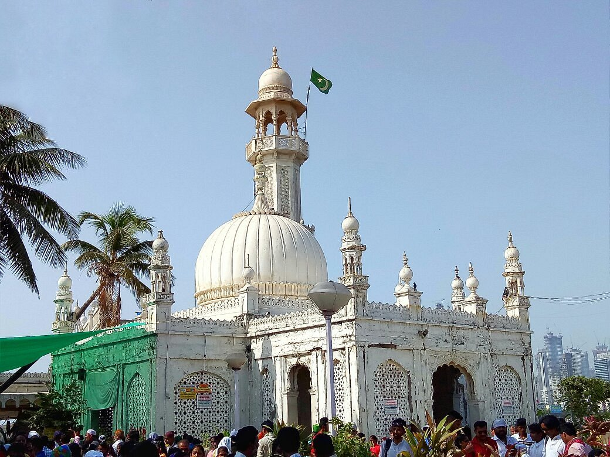

The Haji Ali Dargah, located on an islet off Mumbai’s coast, is dedicated to 15th-century Sufi saint Pir Haji Ali Shah Bukhari. Famous for its Indo-Islamic architecture, it features a marble mosque and the saint’s tomb. Accessible via a narrow walkway during low tide, it is a symbol of secularism, attracting devotees of all faiths. Known for its spiritual ambiance and qawwali sessions, the dargah offers stunning views of the Arabian Sea and Mumbai’s skyline. It is open daily, but visits depend on tide timings.
Historical Significance
The Haji Ali Dargah, located on an islet off the coast of Worli in Mumbai, is a renowned landmark and a significant spiritual site. Dedicated to Pir Haji Ali Shah Bukhari, a 15th-century Sufi saint, the dargah symbolizes secularism and attracts devotees from all faiths. The structure showcases Indo-Islamic architecture, with intricate marble designs and carvings, housing both a mosque and the saints tomb. Accessible only during low tide via a narrow walkway, the dargah offers a serene and picturesque environment amidst the Arabian Sea, with stunning views of Mumbais skyline. Known for its spiritual aura, the site also hosts famous qawwali sessions, enhancing the experience for visitors. As a prominent tourist attraction, it is open daily from early morning to evening, but visitors should plan according to tide timings.
Architectural Features
The Haji Ali Dargah is a stunning example of Indo-Islamic architecture, built entirely of white Makrana marble. Its intricate carvings, marble jaali screens, central dome, and minarets reflect the elegance of 15th-century design. Located on an islet surrounded by the Arabian Sea, the dargah is accessible by a 450-meter-long causeway that gets submerged during high tide, giving it the appearance of floating on water. This blend of artistry and engineering makes the dargah both a spiritual and architectural masterpiece.
Best Time to Visit
Winter (November to February): This is the ideal time due to pleasant, cooler weather with temperatures ranging from 15°C to 30°C (59°F to 86°F), making it comfortable for outdoor visits.
Avoid Summer (March to May): The heat can be intense, with temperatures often exceeding 35°C (95°F), which can make the experience uncomfortable..
Monsoon (June to September): While the monsoon season brings cooler weather, it also brings heavy rains, which can cause inconvenience, especially when walking to the Dargah as it's located on a small island and connected by a narrow causeway.
Location
The Haji Ali Dargah is located on a small islet off the coast of Worli in Mumbai, Maharashtra. Situated in the Arabian Sea, it is connected to the mainland by a 450-meter-long narrow causeway, which can be accessed only during low tide. The dargah's picturesque setting amidst the sea makes it one of Mumbai's most iconic landmarks, offering stunning views of both the city skyline and the surrounding waters.
Festivals
Haji Ali’s Urs (the death anniversary of Haji Ali) usually falls in December or January, drawing large crowds for special prayers and ceremonies. For fewer crowds: Visit on weekdays early in the morning or late in the evening outside of festival times for a more peaceful experience.